File Writing using Java Technology
Stream is a general mechanism of I/O in java. Stream provides sequential access of data.
An input stream can be used by an application to read data. An output stream to write data.
A file, network connection, arrays can act as stream.
Streams are categorized as:
1. Byte Stream means Binary data
2. Character Stream means Textual data
Whenever we have to make program of I/O then we use java.io package or java.nio package.
In Java IO, there are some classes having words like Reader/Writer and Streams, so remember this,
"East or West, Reader and Writer for text"
General rule is that, Reader and Writer are used for character based data (textual data) and streams are used for binary data. In this tutorial We will learn how to use BufferedWriter, PrintWriter, FileOutputStream, DataOutputStream, RandomAccessFile, FileChannel and the Java 7 Files utility class.1. How to write data into file using BufferedWriter
Let's start by using BufferedWriter to write a String to a new file:
import java.io.BufferedWriter;
import java.io.File;
import java.io.FileWriter;
import java.io.IOException;
public class BufferedWriterDemo {
public static void main(String[] args) throws IOException {
// Step #1. Create a file object.
File file = new File("D:\\demo\\abc.txt");
// Step #2. Create a file writer object with above file.
FileWriter fileWriter = new FileWriter(file);
// Step #3. Create a file object with above file writer.
BufferedWriter writer = new BufferedWriter(fileWriter);
// Step #4. Prepare data to be stored in above file.
String message = "Hello, this content will write on file";
// Step #5. Perform write operation.
writer.write(message);
// Step #6. free the resources.
writer.close();
}
}
The output in the file will be:
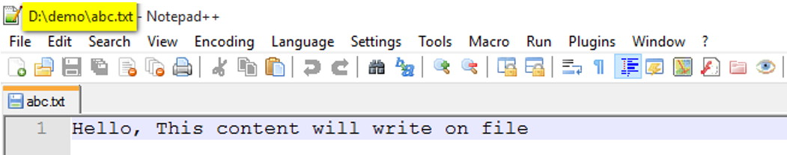
Difference between FileWriter and BufferedWriter:
The FileWriter writes the characters one by one and the BufferedWriter first buffers it to the memory and writes it once.
In above program, if file is already existing, then whole content of a file will have removed and fresh content will be write on that file, means we lost existing data. So what if we want to keep old data and write some more data on same file? Here is the solution:
We can then append a String to the existing file.
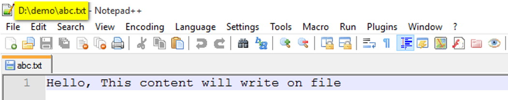
import java.io.BufferedWriter;
import java.io.File;
import java.io.FileWriter;
import java.io.IOException;
public class BufferedWriterDemo2 {
public static void main(String[] args) throws IOException {
// Step #1. Create a file object.
File file = new File("D:\\demo\\abc.txt");
// Step #2. Create a file writer object with above file.
FileWriter fileWriter = new FileWriter(file,true);
// Step #3. Create a file object with above file writer.
BufferedWriter writer = new BufferedWriter(fileWriter);
// Step #4. Prepare data to be stored in above file.
String message = "This is new Content";
// Step #5. Perform write operation.
writer.append(" ");
writer.append(message);
// Step #6. free the resources.
writer.close();
}
}
The output in the file will be:
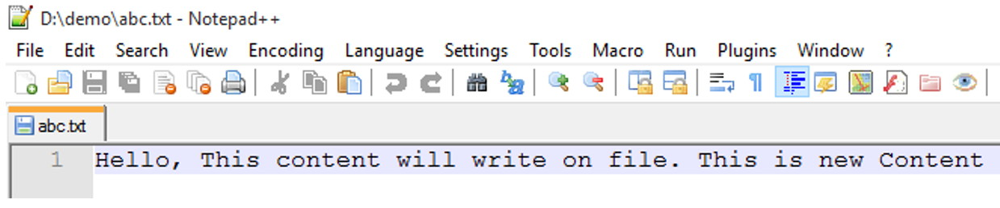
Note: FileWriter fileWriter = new FileWriter(file,true);
We pass an extra boolean parameter, it tells to the FileWriter for append mode. True means append mode is on.
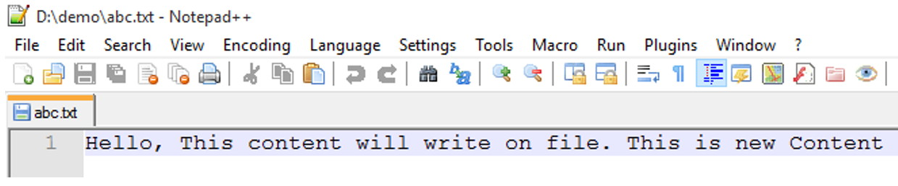
2. How to write data into file using PrintWriter
Next - let's see how we can use a PrintWriter to write formatted text to a file:
import java.io.File;
import java.io.FileWriter;
import java.io.IOException;
import java.io.PrintWriter;
public class PrintWriterDemo {
public static void main(String[] args) throws IOException {
// Step #1. Create a file object.
File file = new File("D:\\demo\\abc.txt");
// Step #2. Create a file writer object with above file.
FileWriter fileWriter = new FileWriter(file, true);
// Step #3. Create a file object with above file writer.
PrintWriter writer = new PrintWriter(fileWriter);
// Step #4. Perform write operation.
writer.println("This is JustJava");
writer.printf("My Name is %s and my age is %d yeras.", "Shadab", 30);
// Step #5. free the resources.
writer.close();
}
}
The output in the file will be:
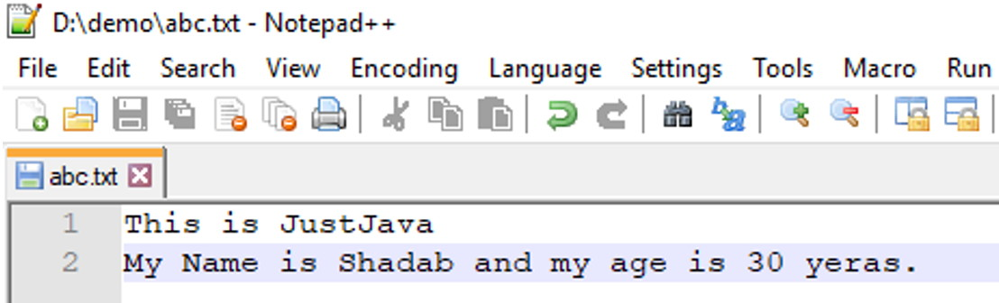
Difference between FileWriter and PrintWriter:
1. The main difference is that PrintWriter offers some additional methods for formatting like println and printf.
2. PrintWriter automatically invokes flush after every byte of data is written. In case of FileWriter, caller must take care of invoking flush.
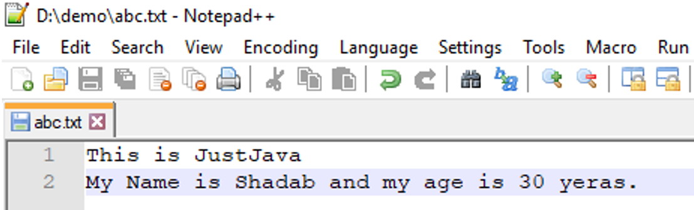
3. How to write data into file using FileOutputStream
We can use FileOutputStream to write binary data to a file. The following code converts a String int bytes and writes the bytes to file using a FileOutputStream:
import java.io.FileOutputStream;
import java.io.IOException;
public class FileOutputStreamDemo {
public static void main(String[] args) throws IOException {
String str = "This is demo app";
FileOutputStream outputStream = new FileOutputStream("D:\\demo\\abc.txt");
byte[] strToBytes = str.getBytes();
outputStream.write(strToBytes);
outputStream.close();
}
}
The output in the file will of course be:
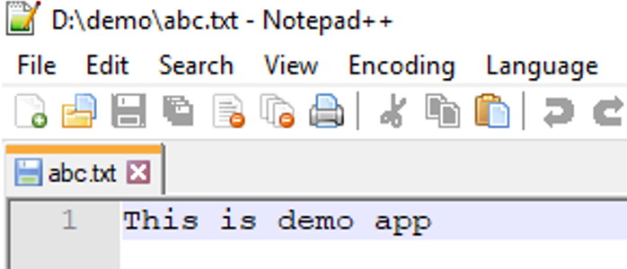
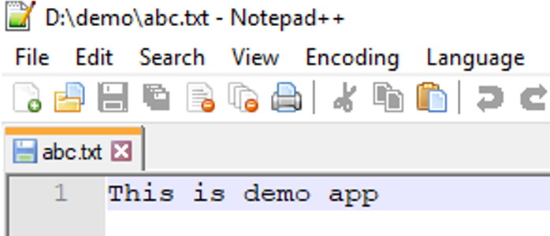
4. How to write data into file using DataOutputStream
Java DataOutputStream class allows an application to write primitive Java data types to the output stream in a machine-independent way. Next - let's take a look at how we can use a DataOutputStream to write a String to file:
import java.io.DataOutputStream;
import java.io.FileOutputStream;
import java.io.IOException;
public class DataOutputStreamDemo {
public static void main(String[] args) throws IOException {
FileOutputStream file = new FileOutputStream("D:\\demo\\abc.txt");
DataOutputStream data = new DataOutputStream(file);
data.writeInt(65);
data.flush();
data.close();
System.out.println("Succcess...");
}
}
Ooops this binary file not understandable by human,lol...
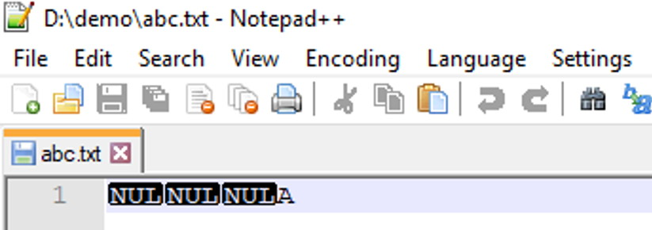
DataOutputStream performs generally better because its much simpler. It can only write primitive types and Strings.
ObjectOutputStream can write any object type was well as primitives. It is less efficient but much easier to use if you want to send complex data.
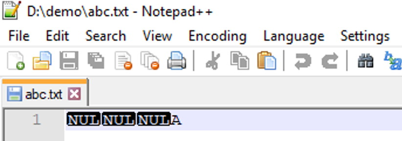
5. How to write data into file using ObjectOutputStream:
ObjectOutputStream in Java can be used to convert an object to OutputStream. The process of converting object to stream is called serialization in java. Once an object is converted to Output Stream, it can be saved to file or database, send over the network or used in socket connections. So, we can use FileOutputStream to write Object to file.
import java.io.FileOutputStream;
import java.io.IOException;
import java.io.ObjectOutputStream;
import java.io.Serializable;
public class ObjectOutputStreamDemo {
public static void main(String[] args) throws IOException {
FileOutputStream file = new FileOutputStream("D:\\demo\\cars.dat");
ObjectOutputStream data = new ObjectOutputStream(file);
Car car1 = new Car();
car1.setName("BMW");
car1.setPrice(1000);
data.writeObject(car1);
data.flush();
data.close();
System.out.println("Succcess...");
}
}
class Car implements Serializable {
private String name;
private float price;
public String getName() {
return name;
}
public void setName(String name) {
this.name = name;
}
public float getPrice() {
return price;
}
public void setPrice(float price) {
this.price = price;
}
/**
*
*/
private static final long serialVersionUID = 2892137946005556067L;
}
The output in the file will of course be:
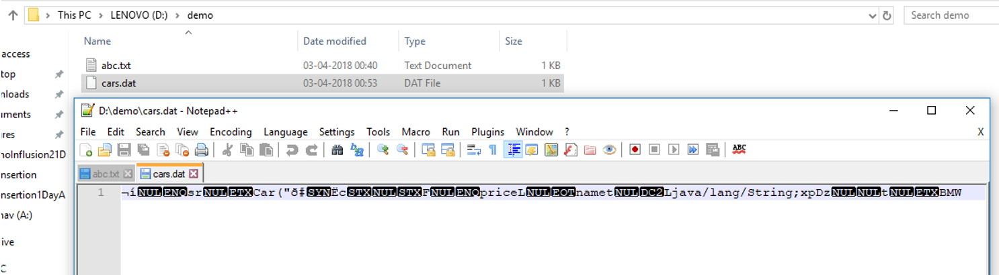
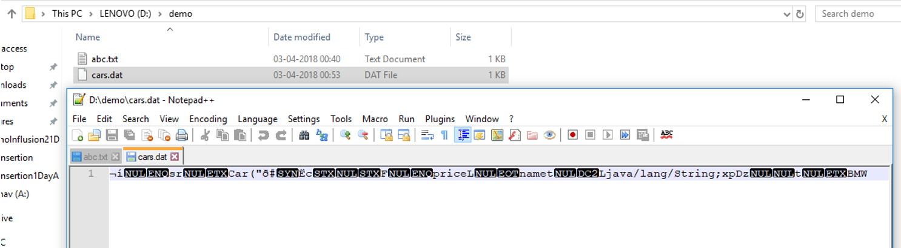
6. How to write data into file using RandomAccessFile.
Java also allows you to access the contents of a file in random order i.e. data items can be read and written in any order. Simply put - we need random access. RandomAccessFile enable us to write at a specific position in the file given the offset - from the beginning of the file - in bytes. The following code writes an integer value with offset given from the beginning of the file:
import java.io.IOException;
import java.io.RandomAccessFile;
public class RandomAccessFileDemo {
public static void main(String[] args) throws IOException {
RandomAccessFile writer = new RandomAccessFile("D:\\demo\\random.txt", "rw");
writer.seek(5);
writer.write("Data".getBytes());
writer.close();
}
}
The output in the file will of course be:
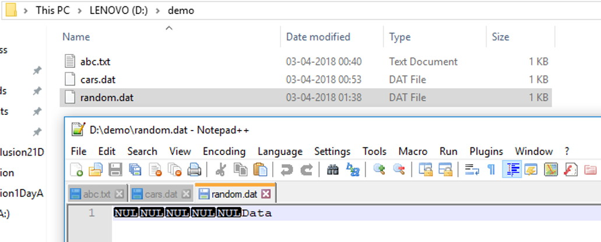
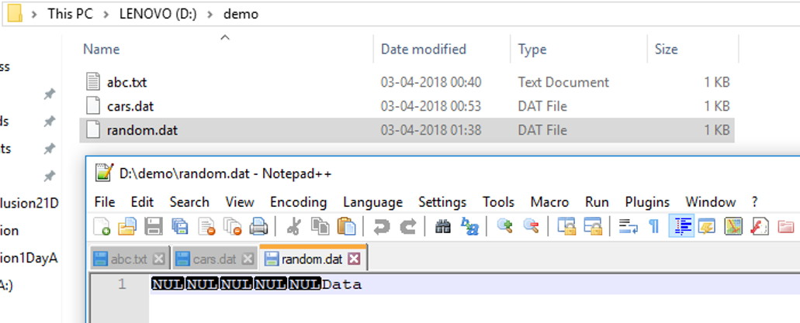
7. How to write data into file using FileChannel?
Channel provides an alternate way to read data from a file, it provides better performance than Input Stream or OutputStream. It can also be opened in blocking and non-blocking mode. If you are dealing with large files, FileChannel can be faster than standard IO. The following code write String to a file using FileChannel: //ToDo: Example8. How to write data into file using Java 7?
Java 7+ users can use the Files class to write to files:
import java.io.IOException;
import java.nio.charset.Charset;
import java.nio.file.Files;
import java.nio.file.Path;
import java.nio.file.Paths;
import java.util.Arrays;
import java.util.List;
public class HowToWriteDataInJava7 {
public static void main(String[] args) throws IOException {
//Create a list of lines.
List lines = Arrays.asList("The first line", "The second line");
//Construct a path for file that will be created.
Path file = Paths.get("D:\\demo\\java7.txt");
//Perform write operation.
Files.write(file, lines, Charset.forName("UTF-8"));
// Files.write(file, lines, Charset.forName("UTF-8"),
// StandardOpenOption.APPEND);
}
}
The output in the file will of course be:
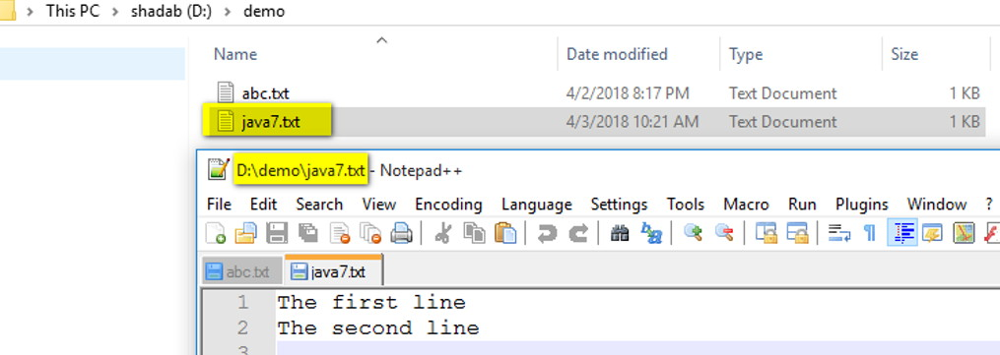
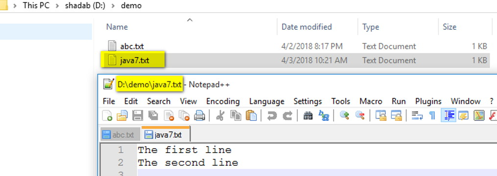
9. How to write data into file using Java 8?
Reading text files into memory and writing strings into a text file in Java 8 is finally a simple task. No messing around with readers and writers. The method Files.readAllLines reads all lines of a given file into a list of strings. You can simply modify this list and write the lines into another file via Files.write:
import java.io.IOException;
import java.nio.file.Files;
import java.nio.file.Paths;
import java.util.List;
public class HowToWriteDataInJava8 {
public static void main(String[] args) throws IOException {
//Reading data from existing file.
List lines = Files.readAllLines(Paths.get("D:\\demo\\source.txt"));
// Add some more data.
lines.add("This is one addition line");
//Write data into another file.
Files.write(Paths.get("D:\\demo\\dest.txt"), lines);
}
}
This is our source file:
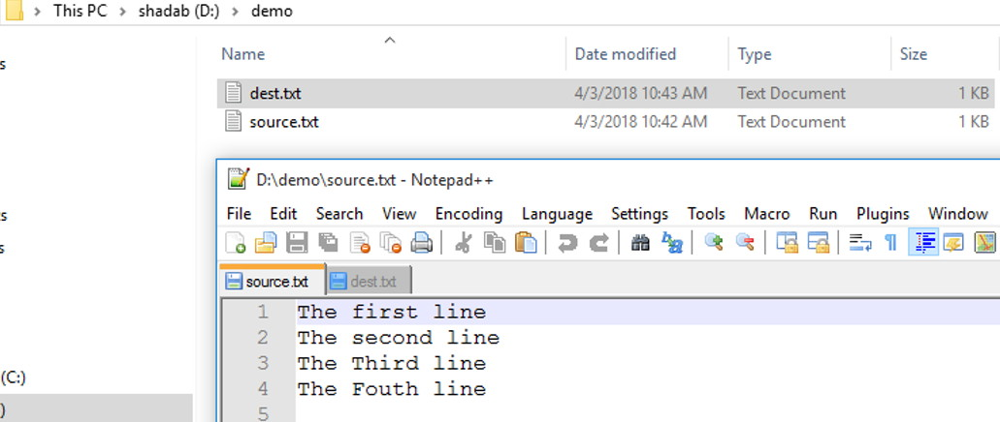
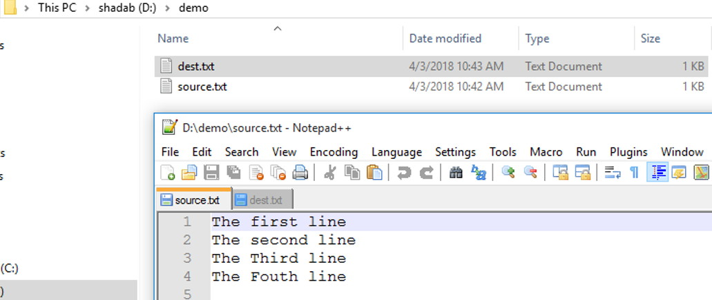
This is our program generated file named dest.txt:
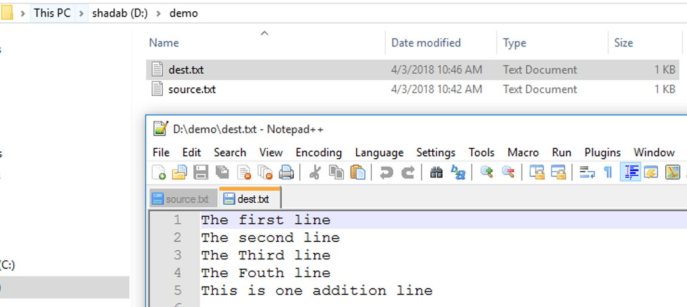
Please keep in mind that those methods are not very memory-efficient because the whole file will be read into memory. The larger the file the more heap-size will be used.
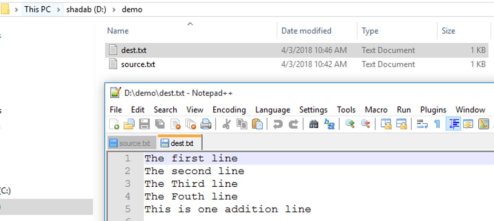
10. How to write data Write to temporary file
Java Temp File. There are two methods in File class that we can use to create temp file in java: a. createTempFile(String prefix, String suffix, File directory) b. createTempFile(String prefix, String suffix) If suffix is null, “.tmp” suffix is used. If directory is null, then temp file is created in operating system temp directory. See below code is code, everything is same as above approaches except the way of creating file.
import java.io.BufferedWriter;
import java.io.File;
import java.io.FileWriter;
import java.io.IOException;
public class TemporaryFileWriting {
public static void main(String[] args) throws IOException {
// Step #1. Create a temporary file object.
File tmpFile = File.createTempFile("test", ".tmp");
// Step #2. Create a file writer object with above file.
FileWriter fileWriter = new FileWriter(tmpFile);
// Step #3. Create a file object with above file writer.
BufferedWriter writer = new BufferedWriter(fileWriter);
// Step #4. Prepare data to be stored in above file.
String message = "Hello, This content will write on file.";
// Step #5. Perform write operation.
writer.write(message);
// Step #6. free the resources.
writer.close();
System.out.println(tmpFile.getAbsolutePath());
}
}
This is our program generated file named dest.txt:
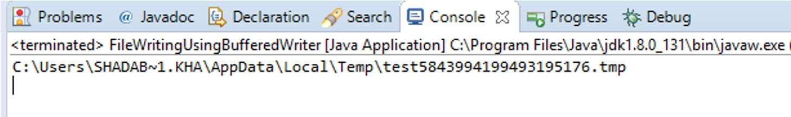
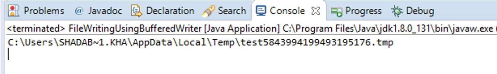
Notes:
- If we try to read from a file that doesn't exist, a FileNotFoundException will be thrown.
- If file is already existing and FileNotFoundException comes its means, there is a permission related problem.
- While writing data into a file, if file is not existing, then no exception will throw and a new file is created by writer/output streams.
- It is our moral duty to free the resources after using them, so close the stream after using it, as it is not closed implicitly, to release any resources associated with it.
- In output stream, the close () method calls flush () before releasing the resources which forces any buffered bytes to be written to the stream